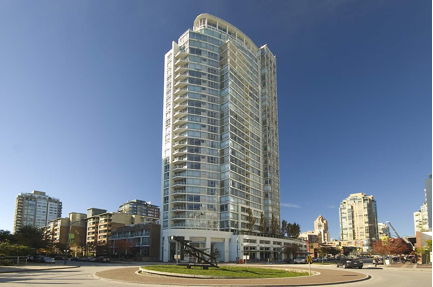

Unit 11: Shared Ownership
Kim Comment
Just one (1) post is required for each of Units 11 and 12, both of which are due on Wednesday, December 2, 2026.
For Unit 11, we are looking at shared ownership, i.e. the rights and obligations of people who share the same interest at the same time.
- Topic 1: Basic Concepts and Creating Shared Interests
- What are the various types of shared ownership?
- What are the elements of joint tenancies and tenancies in common?
- Topic 2: Severing Joint Tenancies
- How is the right of survivorship eliminated?
- Topic 3: Terminating Co-ownership
- What are the provisions that govern the partition of property and some of the issues that arise around partition or forced sale of co-owned property?
- Topic 4: Condominium Property
- What is the package of rights and obligations that comprise condominium property?
To this point in the course, we have seen how the rights and obligations that comprise ownership can be divided into various estates, and that different people may have different rights and obligations with respect to the same property at the same time.
Examples include the grant of a life estate to one person with the remainder in fee simple to somebody else, or the grant of a lease to a tenant with the reversion in fee simple (the right to possession at the end of the lease) held by the landlord. The life tenant and the person holding the remainder in fee simple, or the lessor and the lessee, hold concurrent, but different interests in land.
In this unit, the focus is on the rights and obligations of people who share the same interest at the same time. The unit concludes with a brief look at an increasingly common form of ownership that combines an individual interest with co-ownership: condominium.
11.1 Introducing Shared Ownership
Shared ownership, where multiple owners have a right to possession of the whole, subject to the same right of their co-owners, is a remarkably prevalent feature of ownership. In fact, it may well be much more common for property to be co-owned than for it to be held by a single owner.
As a result, to understand property and the concept of ownership requires attention not only to the relations between an owner and everyone else, but also to relations between co-owners.
The idea of co-ownership or of sharing is also a principal feature of many Indigenous communities and or relations between Indigenous communities.
Activity
Read the introductory material and the brief excerpt from Gregory Alexander’s “Governance Property” in the Reader, 719-22.
Then revisit the excerpt from Thomas Merrill’s “Property and the Right to Exclude” in the Reader, 16-21.
Both authors are making descriptive claims about the core features of property, and both are also making normative claims about what property should be. Can you identify the moral basis or the justifications for those normative claims?
Activity
Next, turn your attention to the excerpt from Brian Thom’s “Addressing the Challenge of Overlapping Claims in Implementing the Vancouver Island (Douglas) Treaties,” 722-24.
What do you make of Thom’s claim that there is a fundamental incommensurability between the certainty and fixity of peoples and boundaries as expected by the state in the modern-day treaty process, and the fluidity and layering of jurisdiction and ownership in a Coast Salish world? Does that incommensurability also apply to the concept of property? Or is there shared conceptual space?
Answer
I agree with Thom that there is a fundamental difference between the state's approach and the Coast Salish approach to land ownership. The state expects clearly defined territories and groups of people, while the Coast Salish system allows different groups to share land and exercise overlapping rights.
This difference, however, concerns how property rights are organized and exercised. As Alexander explains in Governance Property, property is not just about excluding others. It is also about how people share property and manage their relationships with each other. This is similar to the Coast Salish emphasis on sharing and collective decision-making. Likewise, as Thom points out, sharing in the Coast Salish world does not mean that everyone has free access to land. The right to exclude also exists.
Therefore, both authors recognize sharing and exclusion as important features of property.
11.2 Basic Concepts
The two principal forms of co-ownership in the common law are:
- joint tenancies, and
- tenancies in common.
In both forms, all the co-owners (at least two, but more is possible) have an equal right to possession and use of the whole property.
Furthermore, each co-owner may make an inter vivos transfer of his or her share. There may be a limited market for a co-ownership interest because a purchaser would acquire not only an interest in land, but also a relationship with the other co-owners. Nonetheless, co-owners are able to transfer their interests while they are alive.
However, only the tenant in common may dispose of his or her share by will, or, if the owner dies intestate, then only the share of the tenant in common (and not that of a joint tenant) devolves according to the rules of intestacy.
By contrast, joint tenants are constrained by (or have the benefit of) the right of survivorship. On the death of a joint tenant, their share goes immediately to the surviving joint tenant, with the longest living joint tenant becoming the sole owner. As a result, in joint tenancies the property never enters the estate of a deceased co-owner; it becomes part of the surviving co-owner’s or co-owners’ interests.
“The legal fiction underlying a joint tenancy,” suggests Bruce Ziff (Principles of Property Law, 6th Ed., at 338), “is that there is only one tenant and that there are no distinct shares held by anyone. It is ownership per my et per tout: each holds for all.”
Activity
Read the introduction and the excerpt from the Ontario Law Reform Commission report in the Reader, 724-26.
A joint tenancy creates the right of survivorship, but it also requires the presence of “the four unities”:
- unity of possession;
- unity of interest;
- unity of title; and
- unity of time.
The unity of possession is feature of tenancies in common and joint tenancies: each tenant has a right to the whole.
However, joint tenancies exist only where the other three unities are also present. The one exception is that the unity of time is not required if the property interests are devised in a will: the beneficiaries under a will can come into their property at different times (when they turn 21, for example) and still be joint tenants.
11.3 Creating Shared Interests
Creating a joint tenancy or a tenancy in common is fairly straightforward if the language is clear. If there is a transfer of property to co-owners without specification, then the common law presumed that the co-owners held as joint tenants so long as the four unities were present and there were no “words of severance” in the instrument creating the interests. The courts of equity reversed this presumption in three specific scenarios.
Activity
Read the next excerpt from the Ontario Law Reform Commission on the creation of co-ownership and then the excerpt from the decision of the BC Supreme Court in Robb v Robb, in the Reader, 728-35.
The issue in the case is whether Mr. and Mrs. Robb held shares in a residential cooperative association as joint tenants or as tenants in common.
Residential cooperatives were common in the decades following WWII until provinces introduced a statutory condominium form in the late 1960s. This case involved a unit in Ocean Towers, shown under construction in the image below.
Ocean Towers is a market-based residential cooperative, a relatively common form of ownership in Canada before provinces introduced a statutory form of condominium in the late 1960s. The basic structure of residential cooperatives is described in comment 1. Follow the court’s analysis in Robb v Robb of the presumptions at common law and in equity, and note the importance of the property interest to the outcome of the case.
When considering whether co-owners hold as joint tenants or tenants in common, ask these questions:
- Intention? What does the instrument indicate?
- If intention to create a joint tenancy, does it fail because lacking one of the 4 unities?
- If intention unclear, then what is the presumption? (Remember the important distinction between land and personal property. See Property Law Act s 11(2).)
- Does one of the equitable exceptions apply?
- If a joint tenancy, has one of the parties severed the joint tenancy?
Tenancy in common
11(2) If, by an instrument executed after April 20, 1891, land is transferred or devised in fee simple, charged, or contracted to be sold by a valid agreement for sale in which the vendor agrees to transfer the land to 2 or more persons, other than personal representatives or trustees, they are tenants in common unless a contrary intention appears in the instrument.
We turn to the fifth question in the next section.
11.4 Severing Joint Tenancies
To sever a joint tenancy is to eliminate the right of survivorship and convert the co-ownership into a tenancy in common.
When a joint tenant dies, their title vests immediately in the remaining owner or owners, and it is too late to do anything about survivorship. As a result, severance must precede the death of a joint tenant to avoid the right of survivorship.
However, the right of survivorship is not immutable or permanent. It can be destroyed during the lifetime of a joint tenant and, perhaps counter intuitively given the “joint” nature of the interests, by the unilateral act of a joint tenant.
Activity
Read Re Sorensen & Sorensen and the comments that follow it in the Reader, 735-43.
The English case of Williams v Hensman (1861), cited in Re Sorensen, sets out three ways in which joint tenants may sever a joint tenancy:
- “an act of any one of the persons interested operating upon his own share”;
- “by mutual agreement”; or
- “by any course of dealing sufficient to intimate that the interests of all were mutually treated as constituting a tenancy in common”.
In Re Sorensen, the issue is whether Marrian Sorenson has operated on her own share in a manner sufficient to sever the joint tenancy with her former husband. As you read the case, make a list of each act that the Alberta Court of Appeal considers as a candidate for severing the joint tenancy.
Q: Which act did sever the joint tenancy?
A: The execution of the trust deed transferring the beneficial interest in the property to her son.
When considering additional actions (not considered in Re Sorensen) that might fall within “operating upon his/her own share”, the legislatures have added the transfer of an interest to oneself. This was not possible at common law, but British Columbia’s Property Law Act, RSBC c 377, s 18(3), s 18(3) confirms that a transfer of an interest in land to oneself will sever a joint tenancy.
Feinstein v. Ashford, 2005 BCSC 1379
Ms. Feinstein and Mr. Ashford purchased a residential property in Pitt Meadows, which they held as joint tenants. Shortly thereafter, they separated. Ashford executed an application to re-register as a tenant in common and left it with his lawyer to submit to the Land Title Office. His lawyer did not submit the application. Ashford died at 10:04 AM on 28 February 2005. His lawyer then filed the application at 3:23 PM the same day. Feinstein sought a declaration that she and Ashford held the property as joint tenants.
Scan through the first 19 paragraphs of the decision, noting in particular the interaction between the title registration system and the severing of a joint tenancy. Remember that under the registration principle, nothing transfers until the instrument purporting to transfer the interest is registered (Land Title Act, RSBC 1996, c 377, s 20(1)). However, note the exception that leads off that section:
“Except as against the person making it...”
In Feinstein the court ruled that although the instrument severing the joint tenancy had not been registered (and nothing had happened to the joint tenancy), so far as Ashford was concerned the joint tenancy had been severed because he had done everything (signed the application, instructed his lawyer) required to sever the joint tenancy.
The decision in Havlik v Whitehorse, excerpted in the Reader, 742-43, considers the third circumstance from Williams v Hensman, “any course of dealing”, and emphasizes that the
intention of one party to sever a joint tenancy is insufficient.
The Alberta Court of Queen’s Bench indicates that the “course of dealing” must establish the mutual intent among co-owners to hold as tenants in common.
11.5 Terminating Co-ownership
Severing a joint tenancy eliminates the right of survivorship, but it does not end co-ownership. The former joint tenants now hold as tenants in common. However, it is possible not just to sever a joint tenancy, but also to terminate co-ownership.
Terminating co-ownership can occur consensually by dividing the interest among the co-owners, by consolidating ownership with one of the owners, or by all the owners selling their interests to a single party.
If there is no agreement among co-owners, then one or more may apply to court for a partition order. That order may subdivide the property or, where that is not possible, order its sale and the distribution of proceeds among the co-owners.
Activity
Read the material on terminating co-ownership in the Reader, 748-50, including the excerpt from Carter on “The Partition Act”.
In British Columbia, the Partition of Property Act, RSBC c 347, sections 2, 6 & 7, enables the partition and/or the sale of land. Note that the capacity to partition property only applies to land and not to personal property.
Why do you think the statute indicates, in section 6, “the court must... order a sale of the property,” and in section 7, “the court may... order a sale of the property”?
Q: What is the important difference in the two sections?
A: Section 6 provides for a proceeding for partition where at least 50 percent of co-owners support partition; section 7 enables any interested party (a co-owner or creditor of a co-owner) to seek partition.
11.6 Condominium Property
A. Introducing Condominium
Condominium property, or strata property as it is known in British Columbia, is rapidly becoming one of the principal forms of ownership of land in many Canadian cities. One-third of Vancouverites live within condominium, either as owners or tenants, and it is likely that some of you have personal experience with the condominium form.
Condominium is defined by a tripartite structure of ownership. Owners within condominium hold:
- An individual interest in a unit;
- An undivided share of the common property as a tenant in common with all the other owners of units or lots; and
- A right to participate in the governance of the private and common property.
Condominium property owners also have an obligation to contribute to the maintenance of the common property, paid in the form of monthly fees or special levies to the strata or condominium corporation, the body responsible for maintaining the common property.
In British Columbia, strata property is created with the deposit of a strata plan in the Land Title Office. The strata plan marks out the boundaries of each strata lot. Any area that is not within a strata lot is common property. The strata plan also sets out unit entitlements. They are used to determine the share of common expenses apportioned to the owner of each unit.
One of the strata property buildings in Vancouver, The Peninsula, is shown below, with excerpts from the strata plan that creates the legal architecture of ownership for the building.

The Peninsula, 1201 Marinaside Crescent, Vancouver.
Excerpts from Strata Plan LMS 2518, The Peninsula. The image on the left provides a vertical cross-section of the building; the image on the right shows the strata lots on a single floor. The plan marks the boundaries of each strata lot.
Those areas that are not within a strata lot, the corridor, elevator shaft, and stairwell, are part of the common property, as are the exterior windows and walls. Note the LCP or limited common property designation at the top. These are balconies and designated as common property, but for the exclusive use of the owners of strata lots 20 & 21.
Activity
Read the excerpt from Douglas Harris, “Condominium: A Transformative Innovation in Property and Local Government,” in the Reader, 758-62, and then share your experiences with condominium property.
Are you an owner? A member of the strata council/condominium board? A tenant within condominium?
B. Short-Term Rentals within Condominium
Short-term accommodation platforms such as Airbnb have created new income streams for many owners, some of whom now invest in property specifically to rent on a short-term basis. However, the proliferation of short-term accommodation has created serious problems for others in multi-unit developments.
One question that arises is whether condominium corporations should have the power to regulate the alienation of property in the form of a prohibition on short-term rentals. Different jurisdictions have adopted different approaches.
Activity
Read the excerpt from the decision in Ottawa-Carleton Standard Condominium Corporation No. 961 v Menzies, the excerpt from Harris, “Embedded Property,” and the comments that follow in the Reader, 763-68.
Until recently, British Columbia was something of an outlier in allowing condominium government to restrict and even prohibit all rental accommodation. This allowed for “owners-only” buildings. Even so, a large and growing proportion of the rental stock in Metro Vancouver are individual condominium units that are rented.
Turn back to the discussion of residential tenancies in Unit 10.5 and to the power of landlords to evict tenants for cause or for specified reasons.
Q: What reason for eviction is likely to make the rental of a condominium unit less secure for a tenant than the rental of a purpose-built rental unit?
A: Where the landlord intends in good faith to occupy the premises.
Q: What act and section provides for this reason to end a residential tenancy?
A: Columbia’s Residential Tenancy Act, SBC 2002, c 78, s 49(3).
Landlord's notice: landlord's use of property
49(3) A landlord who is an individual may end a tenancy in respect of a rental unit if the landlord or a close family member of the landlord intends in good faith to occupy the rental unit.
In 2022, the province amended the Strata Property Act, removing the power of strata property corporations to prohibit rentals, but leaving space for the prohibition of short-term rentals. The definition of what amounts to a short-term rental appears to be left to local government.
Vancouver has defined short-term as fewer than 30 days. This means that strata corporations in the city can still prohibit rentals for fewer than 30 days.
Do you think this an appropriate power for condominium government? What about the capacity to prohibit rentals more generally? Post your thoughts in the discussion thread.
Answer
I think the current approach strikes a reasonable balance between individual property rights and collective governance. At the provincial level, the Strata Property Act, s. 141, removes the power of strata corporations to prohibit rentals generally. At the local level, municipal governments define what constitutes a short-term rental. At the judicial level, courts distinguish genuine tenancies from short-term accommodation arrangements that constitute licences to occupy (HighStreet Accommodations Ltd. v The Owners, Strata Plan BCS2478). This three-layer structure protects owners’ rights to rent out their property while allowing strata corporations to regulate short-term accommodation in the collective interests of owners.
Similarly, in Ontario, in Ottawa-Carleton Standard Condominium Corporation No. 961 v Menzies, the court recognized that hotel-like short-term accommodation constituted commercial use and that short-term rental restrictions were permissible without fundamentally undermining owners’ rights to lease their units to traditional tenants.
This approach can be explained through Alexander’s distinction between exclusion property and governance property in Governance Property. While exclusion property focuses on the right to exclude others, governance property focuses on the relationships among owners and how they govern their shared property.
Alexander argues that governance property is the dominant mode of ownership in modern society. He also argues that governance property promotes the development of human virtues, such as cooperation, trust and honesty. The way short-term rentals are regulated illustrates both theses, respecting individual property rights while allowing owners to govern their shared property in their collective interests.
Therefore, I support the power of strata corporations to prohibit short-term rentals but not rentals generally.
C. Responses to Chronic Anti-Social Behaviour within Condominium
Everyday nuisances can become a serious problem with many people living in close proximity. The challenges of chronic anti-social behaviour have been an issue for decades in residential tenancy developments, but the density of owners that condominium creates is something new. At one time, owners were spread in a single layer over the surface of the earth. Now owners may be stacked in a vertical column many stories high. In this new spatial context, the distance between owners has diminished and with it, the buffer that space creates between neighbours. What is the appropriate response when an owner’s chronic anti-social behaviour seriously disrupts the lives of their neighbours?
Activity
Read the excerpts from the decision of the Ontario Superior Court in Metropolitan Toronto Condominium Corporation No 747 v Korolekh, the passages from Harris, “Anti-Social Behaviour, Expulsion from Condominium, and the Reconstruction of Ownership”, and the Comments in the Reader, 768-75.
Does the fact that the people who are being evicted and ordered to sell their condominium units commonly suffer some form of mental disorder change? how you feel about these orders? Do you think the amendments (passed by the legislature in 2015 but still not in force) to the legislation in Ontario, which specifically provide for eviction but not forced sale, present a reasonable compromise?
Answer
In my view, the court's order in Metropolitan Toronto Condominium Corporation No. 747 v Korolekh was reasonable. Condominium ownership involves not only individual property rights but also collective rights and obligations. An owner's exercise of property rights should not seriously interfere with the rights and safety of other owners.
Although forced sale is a significant restriction on individual property rights, it may be necessary in extreme circumstances. The court should consider the severity and persistence of the misconduct and whether less restrictive measures can effectively address the problem.
The 2015 amendment concerning permanent removal was never proclaimed into force and was subsequently repealed under s. 10.1 of the Legislation Act, 2006. As a result, the Condominium Act contains no specific provisions governing orders to vacate a condominium unit.
I believe it is preferable to leave the choice of remedy to the courts rather than limit it to eviction. Whether eviction alone is sufficient or a forced sale is necessary should be determined according to the circumstances of each case.
11.7 Review Quiz
Quiz
-
Alexander defines Governance Property as:
- Intensively managed property;
- Multiple-ownership property;
- Subject to local government; or
- All of the above.
-
Co-ownership ceases when a joint tenancy is severed.
- True
- False
Severing a joint tenancy ends the joint tenancy (and its right of survivorship), converting the co-ownership into a tenancy in common, co-ownership itself continues.
-
A joint tenant may sever a joint tenancy with instructions in a will.
- True
- False
A will only takes effect upon death, whereas severance of a joint tenancy must occur during life to defeat the right of survivorship (which vests automatically at the moment of death). A standalone testamentary instruction in a will does not sever a joint tenancy.
-
Unity of possession is a feature of both joint tenancies and tenancies in common.
- True
- False
-
To create a tenancy in common, the four unities need to be present.
- True
- False
The four unities (possession, interest, title, and time) are required to create a joint tenancy. A tenancy in common only requires unity of possession (owners may hold distinct shares acquired at different times under different instruments).
-
Where the transfer instrument is unclear as to the form of co-ownership, the presumption at common law is that they hold as tenants in common.
- True
- False
traditional common law presumption actually favoured a joint tenancy ... but British Columbia’s Property Law Act (s. 11) and Alberta’s Law of Property Act (s. 8) reversed that common law rule so that ambiguous transfers or grants now presume a tenancy in common.
-
British Columbia’s Partition Act only applies to real property.
- True
- False
-
Where a co-owner with an ownership stake of 50% or more requests a court to order a sale of the property, the Partition Act directs that the court must order a sale of the property unless the other co-owners are able to establish a good reason not to sell.
- True
- False
Under section 6 of BC's Partition of Property Act, where co-owners holding a 50% or greater interest apply for a sale, the court shall order a sale unless it sees "good reason" to the contrary, placing the onus on opposing co-owners to show good reason against sale.
-
Within a strata property development, the strata corporation owns the common property.
- True
- False
-
A strata corporations short-term rental prohibition is a permitted restraint on alienation in British Columbia.
- True
- False
Under BC law and the Strata Property Act, strata corporations are permitted to enact bylaws restricting or prohibiting short-term rentals (which are treated as commercial/licence-to-occupy arrangements rather than residential tenancies).
Textbook Summary
Chapter 9. Shared Ownership
This chapter considers ownership in which two or more persons share a right to possession of the same thing at the same time. It deals with concurrent rather than successive ownership.
Joint tenants have a right of survivorship; conversely, tenants in common have the right to direct where their share will go on their death.
Within co-ownership, there is what is known as the unity of possession: each co-owner is entitled to possess or make use of the whole, subject to the right of other co-owners also to possess and make use of the whole.
G.S. Alexander, Governance Property
Exclusion theorists of property think that the concept of property properly concerns only the relations between owners and nonowners... what happens within the box, between or among the persons having a property interest in the asset, is of no concern to property law.
To reveal this misconception, I will distinguish between two types of property, which I call exclusion property (EP) and governance property (GP).
- Exclusion property, consists of one owner with virtually all control over the asset; therefore, a defining characteristic is that the owner's rights are in rem (Latin for "against the thing" or "about a thing") in nature.
- Governance property, is multiple-ownership property. GP requires governance norms, the devices regulating ownership's internal relations... including coterminous rights to use, possess, manage, and transfer the asset.
The fragmentation of various sorts of coincident rights with respect to some asset is what distinguishes GP from EP and creates the need for norms that govern the exercise of those rights.
Examples of GP include concurrent estates; marital and domestic partnership property; common interest communities, including condominiums and housing cooperatives; certain forms of business organizations, including partnerships and close corporations; leaseholds; and trusts, including statutory trusts (e.g., pensions).
This Article has two main theses: one is positive, the other normative.
- The positive thesis is that governance property, not exclusion property, is the dominant mode of ownership today. The right to exclude, although important, is not central to GP; rather, internal governance mechanisms are essential.
- The normative claim of this Article is that ownership of governance property, as opposed to exclusion property, contributes to the development of certain virtues that promote human flourishing. These virtues include community, cooperation, trust, and honesty.
B. Thom, Addressing the Challenge of Overlapping Claims in Implementing the Vancouver Island (Douglas) Treaties
Sharing food, and in particular sharing access to owned productive resource locales and other places for obtaining food, has long been the Coast Salish moral standard for maintaining a respectful rapport between neighbours and kin.
... community in the Coast Salish world can be understood as encompassing both extended kin networks and the villages or tribes that are now represented by contemporary political bodies. Both extended networks of kin and local village groups have a stake in decision making about how hunting and other practices are conducted on the land, and both are essential to the successful functioning of territorial relations within the society.
Over time, people may exercise substantial degrees of resourcefulness to succeed in life through their choices of both where they live and how they activate their extended family networks.
The state expects a different vision of Indigenous citizenship and territoriality, quite blind to local Indigenous principles of land tenure. The Indian Act requires that individuals declare membership in only one Aboriginal community, and federal policy demands that modern-day land claims citizens be beneficiary of only one treaty. There is no Canadian framework for dual citizenship of Indigenous Nations, no so-called double dipping on treaty rights and benefits...
Brian Thom suggests a fundamental incommensurability between, on the one hand, the certainty and fixity of people and boundaries expected by the state in the modern-day treaty process and, on the other, the fluidity and layering of jurisdiction and ownership in the Coast Salish world.
Thom notes that the Coast Salish world should not be thought of as an open-area commons, suggesting that the right and capacity to exclude was also part of “maintaining a respectful rapport between neighbours and kin.”
The principal distinction between two shared ownerships turns on whether a co-owner has any capacity to determine what happens to their share on their death. As the excerpt from the Ontario Law Reform Commission reveals, there are particular requirements for a joint tenancy that, if not met, have the effect of producing a tenancy in common even where the intention is to create a joint tenancy.
Ontario Law Reform Commission, Report on Basic Principles of Land Law (Province of Ontario, 1996)
The two main types of co-ownership are joint tenancy and tenancy in common.
The fundamental concept behind joint tenancy is that two or more people together own the same interest. This was traditionally expressed by saying joint tenants were seised “per mie et per tout”, meaning that
each joint tenant holds the whole and holds nothing, that is, he holds the whole jointly and nothing separately.
This fundamental concept gives rise to two main features: the four unities and the right of survivorship.
The four unities that must be present for the creation and continuation of a joint tenancy are the unities of possession, interest, title and time.
- The unity of possession “refers to the fact that each joint tenant is entitled, concurrently with the other joint tenants, to possession of the whole of the land that is the subject of the joint tenancy”.
- The unity of interest requires that the interest of each joint tenant be “the same in extent, nature and duration”. For example, there can be no joint tenancy if one person's interest is indefeasibly vested and another's is subject to a condition subsequent.
- The unity of title means that each joint tenant's title must be derived from the same document or occurrence.
- The unity of time means that each joint tenant's title must vest at the same time. However, unity of time is not required for a joint tenancy created by will or by a conveyance employing a use. For example, a joint tenancy may be created by a gift by will of land to the children born to A, even though the children's interests will each vest at the time of their respective births.
The right of survivorship (or jus accrescendi as it is often called) is the right of the surviving joint tenants to take the interest of a pre-deceasing joint tenant.
As we shall discuss below, a joint tenancy may be converted into a tenancy in common (which carries no right of survivorship) by a process known as severance. However, severance may not be effected by will, so that if a joint tenant purports to devise his or her interest in the property by will, the surviving joint tenants will benefit from the right of survivorship and the devisee will take nothing.
A tenancy in common differs from a joint tenancy in two main ways.
- First, the only unity that is required is unity of possession.
- Secondly, tenants in common do not have a right of survivorship.
[T]here are circumstances in which parties may reasonably wish to have a joint tenancy in which their interests are unequal, but the present law does not provide a convenient means of achieving that object.
Accordingly, we recommend that the unities of interest, time, and title should be abrogated as requirements for a joint tenancy. Instead, the fundamental determining factor should (subject to the relevant presumptions) be solely one of intention: whether the parties intended the right of survivorship.
9:9. Methods of Creation
The consequences of creating either a joint tenancy or a tenancy in common are considerable. The former carries with it the right of survivorship, the latter does not.
However, transfer instruments are not always clear. The report from the Ontario Law Reform Commission sets out the presumption at common law where there is no direction, that co-owners hold as joint tenants, and then the circumstances in which equity reversed this presumption such that co-owners were presumed to hold as tenants in common.
It also provides one example of how the presumption at common law has been reversed by statute. The case of Robb v Robb, which follows, considers the circumstances in which equity reversed the presumption at common law and then the application of the statute-based presumption that co-owners hold as tenants in common.
Ontario Law Reform Commission, Report on Basic Principles of Land Law
At common law there was a presumption of joint tenancy (rather than tenancy in common) so that a transfer of title to co-owners produced a joint tenancy if the four unities were satisfied and an intention to create a tenancy in common was not established.
However, in at least three sets of circumstances equity took a different view and presumed a tenancy in common.
- First, where two or more persons advance money on mortgage, it is presumed in equity that their title as mortgagees is held as tenants in common.
- Second, it is the orthodox view that partnership property is presumed in equity to be held by partners as tenants in common.
- The third situation is where the purchase price for the property is provided unequally.
For example, assume that A and B purchase property, A paying 75 percent and B 25 percent, and title is put in the name of B alone. Subject to proof of a contrary intention, B would hold the property on a resulting trust for A and B as tenants in common with A having a 75 percent share and B a 25 percent share. It is not clear what the position is if title is put in the name of A alone but A and B contributed equally to the purchase price.
In Delehunt v. Carmody [(1986) 161 CLR 464] the High Court of Australia, relying on the indirect effect of a provision equivalent to s. 13 of the Conveyancing and Law of Property Act, R.S.O. 1990, c. C.34, held that A and B were equitable tenants in common with equal shares. In fact, it is strongly arguable that, even apart from the indirect effect of s. 13, a beneficial tenancy in common is presumed to be created when interests are created under a resulting trust, whether those interests are unequal or equal.
Section 13 of the Conveyancing and Law of Property Act, R.S.O. 1990, c. C.34 applies only to “land”. The common law presumption in favour of joint tenancy has therefore not been altered with respect to pure personalty.
Robb v. Robb, 1993 CanLII 1381 (BC SC)
The issue to be decided in this case is whether the interest of Mrs. Robb in the shares in Ocean Towers Limited and the leasehold interest in Suite 501 as co-owner with her husband was an interest as a joint tenant or an interest as a tenant in common.
At common law, when real property or personal property is granted to two or more persons with no words of severance, the persons are joint tenants and there is a right of survivorship.
Equity apparently did not like joint tenancy and it also appears that the legislature preferred tenancy in common in situations involving real property.
Equity therefore leans in favour of a tenancy in common... arises in three main classes of case,
- (a) where the parties contribute the purchase monies for the property in unequal shares;
- (b) where the property is a mortgage and the co-owners are the mortgagees;
- (c) where the parties are business partners.
It is my view that, apart from statutory considerations, the common law result of a joint tenancy must prevail. The only potentially applicable equitable exception is the one based on an unequal contribution of the purchase price. ...I find that the Robbs did not hold the shares and the leasehold interest in unequal proportions and there is no basis in equity for a finding of a tenancy in common.
s. 11(1) of the Property Law Act, R.S.B.C. 1979, c. 340 reads as follows:
Where, by an instrument executed after April 20, 1891, land is transferred or devised in fee simple, charged, or contracted to be sold by a valid agreement for sale in which the vendor agrees to transfer the land, to 2 or more persons, other than personal representatives or trustees, they are tenants in common unless a contrary intention appears in the instrument.
In a sense the present case is analogous to Campbell. The Ontario Court of Appeal held that the agreement to purchase did not operate to grant, convey or devise an interest in land. In this case the assignment of lease does not operate to charge the land.
As s. 11(1) of the Property Law Act does not apply to the assignment of lease from the Estate of Mrs. Cameron in favour of Mr. and Mrs. Robb, the common law determination of joint tenancy applies to both of the assignment of lease and the shares.
Although the dispute in Robb v Robb between the children of the deceased and the spouse of the deceased focused on an apartment in a waterfront building near downtown Vancouver, the actual interest at issue was personal property: Mr Robb's shares in the Ocean Towers cooperative association.
The presumption at common law that co-owners hold as joint tenants can be up-ended if the four unities, unity of possession, of title, of interest, and of time, are not satisfied, although the unity of time is not required if the joint tenancy is created in a will.
The presumption can also be rebutted by what the courts label words of severance. These are words in a transfer instrument that exhibit an intention on the part of the transferor to divide the property. The courts have interpreted words and phrases such as “equally” or “equally among them”, or “share and share alike,” or even “jointly” or “jointly in equal shares”, as words of severance that establish a tenancy in common. See Re Bancroft, Eastern Trust Co. v. Calder et al., 1936 CanLII 543 (NS SC).
9:13. Severance of Joint Tenancies
In the context of co-ownership, the word “severance” is used in two different ways.
- In the determination of whether a joint tenancy or a tenancy in common has been initially created, appropriate words of severance (such as “share and share alike”) are taken to denote a tenancy in common.
- The word severance is also used to refer to the transformation of an existing joint tenancy into a tenancy in common.
Sorensen (Estate) v. Sorensen, 1977 CanLII 1648 (AB SCAD)
This appeal is concerned with whether there has been severance of the joint tenancy titles of three lots in the city of Calgary, which are registered in the name of Marrian Alwilda Sorensen and Marshall Kitchener Sorensen as joint tenants.
As was said by Lord Denning in Burgess v. Rawnsley, [1975] Ch. 429 at 438-39, [1975] 3 All E.R. 142, in referring to the manners in which a joint tenancy may be severed,
A joint-tenancy may be severed in three ways:
- in the first place, an act of any one of the persons interested operating upon his own share may create a severance as to that share. Each one is at liberty to dispose of his own interest in such manner as to sever it from the joint fund, losing, of course, at the same time, his own right of survivorship.
- Secondly, a joint tenancy may be severed by mutual agreement.
- And, in the third place, there may be a severance by any course of dealing sufficient to intimate that the interests of all were mutually treated as constituting a tenancy in common. When the severance depends on an inference of this kind without any express act of severance, it will not suffice to rely on an intention, with respect to the particular share, declared only behind the backs of the other persons interested. You must find in this class of cases a course of dealing by which the shares of all the parties to the contest have been affected.
The onus to demonstrate that there has been a severance lies on those who so contend: Re Denny; Stokes v. Denny, [1947] L.J.R. 1029 at 1032, and Flynn v. Flynn, [1930] I.R. 337 at 343.
The subsequent conduct of the wife is against drawing any such inference, for she clearly thought she had to do something further to sever the title as is shown by her conduct in executing the trust deed and commencing an action for partition. There is no evidence that the husband at any time considered that the joint tenancy of the properties had been severed.
I am, therefore, of the opinion that the conduct of the parties in this respect was not intended by them to sever the title as to the lot on which the matrimonial home was situated and it was not severed.
The question becomes, does the granting of a lease by one joint tenant to the other work a severance of the tenancy? In 24 Halsbury (1st), 205, para. 389, it is stated:
A lease for years by one of two joint tenants in fee of his share does not, it seems, sever the joint tenancy, and it is binding on the other joint tenant after the death of the lessor, whether the lessee enters during the life of the lessor or not.
I have therefore come to the conclusion that the lease by the husband to wife, being only for the lifetime of the wife, did not sever the tenancy.
The question of whether a mortgage by one joint tenant works a severance ... as there has been no interference with the jus accrescendi (right of survivorship), the charge by the husband did not work a severance.
I turn now to the question of whether the execution of the trust deed and the execution of the transfers effected a severance.
In the case at bar the wife declared in the trust deed that she was severing the joint tenancy, but there is no evidence that this trust deed ever came to the attention of the husband. I think it clear, as stated by Sir John Pennycuick in Burgess v. Rawnsley, supra, at p. 154, a declaration by one party uncommunicated to the other cannot operate as a severance.
The execution of a will cannot sever a joint tenancy: 37 Halsbury (3d) 337; Megarry and Wade, The Law of Real Property, 1st ed. (1957), p. 403.
This statement refers to the execution of a will by one joint tenant only, for in Szabo v. Boros (1967), 60 W.W.R. 754, 64 D.L.R. (2d) 48, it was held by the British Columbia Court of Appeal that, where both joint tenants executed wills leaving the property in question to the other, this evidenced a common intention to treat the property as severed and fell within the third category of ways that a joint tenancy might be severed, as enunciated in Williams v. Hensman, supra, viz., a course of dealing showing that the tenants intended their interests to be treated as tenants in common and not joint tenants.
I am of the view that the weight of authority is that the declaration by one party of an intention to sever alone without any other act and without acceptance by the other joint tenants does not sever the tenancy.
The Alberta Court of Appeal in Sorensen Estate v Sorensen appears to make a distinction between the grant of a lease for a term of years and a lease for life (in effect, a life estate) when it comes to severing a joint tenancy. The Court suggests that while the grant of a lease may sever a joint tenancy, the grant of a life estate between joint tenants does not because “it did not interfere with the chief characteristic of a joint tenancy, viz., survivorship.”
As stated in Williams v Hensman, and quoted in Sorensen Estate v Sorensen, there may be severance of a joint tenancy,
by any course of dealing sufficient to intimate that the interests of all were mutually treated as constituting a tenancy in common.
Some Canadian courts have held that even where negotiations between joint tenants do not lead to a binding contract concerning their property holdings (the mutual agreement referred to in Williams v Hensman), the process of negotiation can constitute a course of dealing sufficient to sever the joint tenancy: see, e.g., Re Walters, 1977 CanLII 1835, 1977 CarswellOnt 404 (ONSC), aff'd, 1978 CanLII 1691, (note) (ONCA), and compare with Gore & Snell v Carpenter (1990), 60 P & CR 456 (Ch) (United Kingdom).
Havlik v Whitehouse, 2000 ABQB 242, 2000 CarswellAlta 355, suggests that courts may be more willing to find that negotiations regarding severance constitute a course of dealing sufficient to sever the joint tenancy in the context of marriage breakdown than in other contexts.
In Marley v Salga, 2019 ONSC 3527, the question before the Court was whether there had been a course of dealing sufficient to sever the joint tenancy.
The Court found that the joint tenancy had been severed. The two key pieces of evidence were,
- first, that the will directed his one-half interest to his daughters, a grant that was inconsistent with the right of survivorship in joint tenancy. It is not possible to sever a joint tenancy in a will, but the provisions in a will can be used to ascertain whether there had been mutual intention to sever.
- Second, the Court pointed to a conversation between husband and wife in which they discussed a 50-50 sharing of the property for purposes of providing for his two daughters, with wife having the benefit of a life tenancy.
Nonetheless, the Court found that the provision in the will and the recording were sufficient evidence that husband and wife, by mutual consent, were treating their co-ownership as a tenancy in common.
Severance can arise by operation of law. For example, bankruptcy gives rise to a severance of all of the jointly held property of the bankrupt by virtue of the fact that title is transferred by law to the trustee in bankruptcy: see, e.g., Kansra (Trustee of) v Kansra, 2003 CarswellOnt 1994 (ONSC).
Saskatchewan and Alberta have eliminated the capacity to sever a joint tenancy by acting independently on a share.
The Land Titles Act, 2000, SS 2000, L-5.1
156 No title or interest held in joint tenancy may be alienated by an instrument purporting to grant the title or interest unless the alienation is authorized:
- (a) by all the joint tenants, in writing; or
- (b) by court order, on the application of one of the joint tenants.
9:18. Terminating co-ownership
What happens when a co-owner wants out of co-ownership?
- If the co-owners can co-operate enough to do so, and if the property can be divided without destroying its value, then they could subdivide the co-owned whole into parcels that the former co-owners will own individually.
- The co-owners could also sell the undivided property and divide the proceeds, or one or more of the co-owners could sell their interest to the remaining co-owner(s).
- A co-owner has the right to sell their interest in the undivided whole without offering it to the other co-owner(s) first, but, depending on the nature of the property and the nature of the relations among the co-owners, buying into a co-ownership situation may not be attractive to a third party.
- As a last resort, a co-owner may be able to apply for an order for partition or for sale of the property, with or without an accounting between the parties.
C.R. Carter, The Partition Act
The Partition Act, RSO 1990, c P.4 is a mere seven Sections long but can have a significant impact on the rights of parties who own real property in Ontario on a co-owned basis.
...there are a significant number of cases dealing with circumstances when a court will order partition or alternatively will order sale in the face of objections to partition by one of the co-owners. Our research indicates that there are over 800 cases in Canada dealing with partition and sale [as of 2002], the vast majority arising out of family situations where spouses or family members hold title to real property jointly or as tenants in common.
The courts have been called upon to craft an appropriate remedy with little guidance from the legislature.
On reading the case law, there are a series of rules that have become entrenched:
- There is a hierarchy of remedies under the Partition Act. First of all, the parties are entitled to partition as the primary remedy. That is, the real property will be divided between the applicant and the respondent in some equitable way. It is up to the court to decide how the lands will be partitioned. Partition is the primary objective and all things being equal, partition and not sale will be issued. It is only if partition is not ordered that you move to sale.
- The court will only order sale where it appears that the applicant is entitled to a partition but a sale would be more advantageous to the parties. Once the court decides that a partition order ought to be made then the court can exercise its jurisdiction to determine whether a sale is more appropriate than a partition. The court will generally order a sale only where it is impossible to divide up the land in some equitable fashion.
- The court has to make a threshold decision at the beginning of the application as to whether the application is entitled to partition or not.
- Mortgagees can be compelled to suffer partition and sale of the mortgaged property.
- It may be possible for the court to attach a right of first refusal to a sale order under a partition application in the right circumstances. In these circumstances, the property would be offered for sale and one of the parties has a right to match any legitimate third party offer that comes in.
- It appears that a minority interest can compel a majority interest to have its interest in the property sold over the objection of the majority interest. A party with a one percent co-ownership interest in the property can force the holders of the ninety-nine per cent interest to sell their interest in the open market even against their will.
- Any party to a sale order can be a bidder in the sale process.
- The court does not appear to be prepared to order the respondent or applicant to sell its interest in the property to the other party. The court favours an open market concept, which it believes will more likely result in a fair market sale of the property.
- The courts appear to be reluctant to order the sale of a part interest in the property.
- There is at least one case where the courts have refused to assist a commercial applicant to use the Partition Act to further its commercial goals at the expense of its co-owner.
- A clause in a co-owners agreement that obligates a party not to use the Partition Act as an exit strategy will be upheld by the court. (Vetter v. Bolivar, 2010 BCSC 652)
9:25. Ownership Within Condominium
Ownership within multi-unit dwellings can be produced using a number of different legal forms, but condominium has become much the most common.
D.C. Harris, Condominium: A Transformative Innovation in Property and Local Government
Condominium as legal form
Condominium is a form of land ownership. Each condo exists as a distinct parcel of land that is individually owned and separately taxed. Owners of these parcels also have collective ownership of the common property and voting rights in an association of owners that is charged with managing and maintaining the common property and empowered to create and enforce rules relating to the uses of individual units and common areas. As a result, condominium combines private property with common property and democratic rights to produce a particular architecture of land ownership and of local government.
Known in much of the world as condominium, this same combination of rights in multi-unit developments is variously labelled strata title, sectional title, unit title, divided co-ownership, horizontal ownership, jointly owned property, and apartment ownership.
- Cooperative produces an association that holds title to a multi-unit development and allocates exclusive rights of use to particular units to its members.
- Condominium produces units as separate parcels of land that are individually owned and whose owners also own the common property, a dualistic ownership structure.
- Planned community is a general designation for common interest structures that are neither cooperative nor condominium, the most common of which is the homeowners association in which units are individually owned, but where the association owns the common property.
Condominium as property innovation
The data at national levels are not precise and comparisons between jurisdictions are difficult, but the extraordinary rise of condominium is clear.
9:27. Short-term rentals
The proliferation of short-term rentals has posed significant challenges for many residents living within condominium. Some municipalities have passed bylaws to limit or restrict short-term rentals in units that might otherwise be occupied by long-term residents, and many condominium corporations have also attempted to restrict or prohibit short-term rentals.
In some instances, the bylaws include several of these provisions, as in the case below.
Ottawa-Carleton Standard Condominium Corporation No. 961 v Menzies, 2016 ONSC 7699
This is an application by a residential condominium corporation seeking to enforce its regulations against the short-term tenancies.
Without the consent of the other owners, some owners were basically operating a hotel out of a residential complex.
Based on the evidence before me, there is no doubt that the Respondents, who have leased their unit, on a repeated short-term basis in a hotel-like operation, are in breach of the Declaration.
“Single family use” cannot be interpreted to include one's operation of a hotel-like business, with units being offered to complete strangers on the internet, on a repeated basis, for durations as short as a single night.
What has happened in this case is a commercial use of the unit.
Rules preventing short-term leasing that are not so overly restrictive as to completely negate or fundamentally alter the right of owners to lease their units to traditional tenants have been found valid and in compliance with s. 58 of the Act (Condominium Act, 1998, S.O. 1998, c. 19). Specifically, rules requiring that leases be in excess of 4 months have been found to be valid and enforceable.
D.C. Harris, Embedded Property
In Owners Corporation PS 50139P v Balcombe, [2016] VSC 384, ... notwithstanding the prohibition, one owner acquired 14 apartments within the development and, over a period of eight and a half years, arranged 3,500 bookings and hosted 10,500 guests in those units for periods as short as seven days. In 2014, the owners corporation sought an order that the owner stop using the units in violation of the short-term rental prohibition. However, the Supreme Court of Victoria denied the order, ruling instead that the owners corporation had exceeded its jurisdiction in attempting to prohibit short-term rentals.
... a spectrum between protecting the rights of individual owners and empowering the group of owners to place limits on those rights.
... in 2016, the same year as the decision of the Victoria Supreme Court involving the Watergate Apartments, the Ontario Superior Court confirmed the power of condominium corporations to prohibit short-term rentals.
At the other end of the spectrum is the Canadian province of British Columbia. ... the government re-wrote the statutory provision to confirm that strata corporations could restrict and even prohibit rentals [Strata Property Act, SBC 1998, c 43, s 141(2)].
In Kapoor v. Toronto Standard Condominium Corporation No. 2450, 2019 ONSC 3461, a private company operated executive short-term rentals out of condominium units. The Ontario Superior Court relied on Ottawa-Carleton Standard Condominium Corporation No. 961 v Menzies in finding for the condominium corporation.
In 2022, British Columbia repealed the provisions in the Strata Property Act, SBC 1998, c 43, that allowed a strata corporation to prohibit rentals. The amended section 141 provides that
The strata corporation must not screen tenants, establish screening criteria, require the approval of tenants, require the insertion of terms in tenancy agreements or otherwise restrict the rental of a strata lot.
However, the courts have interpreted short-term accommodation as operating under a licence, not a tenancy (HighStreet Accommodations Ltd. v The Owners, Strata Plan BCS2478, 2017 BCSC 1039), and have upheld bylaws that prohibit short-term accommodation.
Some have described condominium as creating a fourth level of government, below federal and provincial governments, and alongside municipal governments, which also derived their authority under provincial statute. In British Columbia, the Strata Property Act, SBC 1998, c 43, s 121 provides that a strata bylaw is not enforceable to the extent that it “contravenes” other law. This creates a high standard for declaring a strata bylaw unenforceable, much higher than is the case in the state of Victoria where the Owners Corporation Act 2006 (Vic), s 140 (Australia), provides that a bylaw is not enforceable to the extent that it is “inconsistent with” other law.
Responses to Anti-Social Behaviour
Metropolitan Toronto Condominium Corporation No. 747 v. Korolekh, 2010 ONSC 4448
This is an originating Application brought by Metropolitan Toronto Condominium Corporation No. 747 (“MTCC 747” or “the Applicant”) pursuant to ss. 117 and 134 of the Condominium Act, 1998, S.O. 1998, c. 19 (“the Act”).
The Applicant alleges that one of its unit holders, the Respondent Natalia Korolekh (“the Respondent” or “Ms. Korolekh”) has repeatedly violated s. 117 of the Act and should be ordered to sell and vacate her unit.
Section 117 of the Act prohibits conduct that is “likely to damage the property or cause injury to an individual” and s. 134 enacts a broad remedial power to enforce “compliance” with “this Act, the declaration, the by-laws, [or] the rules”.
I am persuaded that an order requiring Ms. Korolekh to sell her unit and vacate, within three months, is justified in the unusual circumstances of this case.
People join condominium corporations voluntarily on the basis that they agree to share certain collective property and to abide by a set of rules and obligations that protect the collectivity. There is no right to continue membership in this corporation or this community, once a clear intention to harm it and a persistent refusal to abide by its rules have been exhibited in the extreme ways seen in this case.
D.C. Harris, Anti-Social Behaviour, Expulsion from Condominium, and the Reconstruction of Ownership
From 2008 to 2015, the courts in Ontario and British Columbia have made nine reported eviction and sale orders within condominium and one forfeiture order in a leasehold development to address what they most commonly describe as misconduct.
In making the orders, the courts appear to understand them as a necessary diminution of ownership within condominium. This sentiment is captured in the British Columbia Court of Appeal's use of the well-worn castle metaphor in Jordison:
The competing private property interest ... must, in my opinion, yield to the rights and duties of the collective as embodied in the bylaws and enforceable by court order. The old adage “a man's home is his castle” is subordinated by the exigencies of modern living in a condominium setting.
This change ... may be described, as a shift from the stronger property rule protection for an entitlement to the weaker liability rule protection.
- A property rule secures an entitlement by stipulating that it can only be transferred from its owner with consent, in a voluntary transaction and for a value accepted by the owner.
- Conversely, a liability rule provides that an owner has a right to the objectively determined value of an entitlement. Under a liability rule, the holder of an entitlement might lose that interest involuntarily...
Another way to describe the change is that the courts have made it a condition of continuing ownership within condominium that owners maintain a minimum standard of personal behaviour.
However, while the general tenor of the judgments suggests that the courts understand eviction and sale orders as diminishing the nature of ownership within condominium, the language used to describe the orders reveals something else. In almost all the cases, the courts label the order as a “remedy” rather than a “sanction.”
The courts in Ontario and British Columbia are providing owners within condominium a remedy that is not available to those outside condominium: the physical and legal expulsion of an owner for chronic and egregious anti-social behaviour. The courts in Ontario and British Columbia are reconstructing ownership within condominium primarily as a response to the destructive effects of owners who suffer some form of mental disorder.
... these orders are reconstructing ownership within condominium and, by doing so, redistributing property.
In 2015, the Ontario legislature passed the Protecting Condominium Owners Act, SO 2015, c 28, making extensive amendments to the Condominium Act, 1998, SO 1998, c 19. These amendments included a new provision that described the circumstances in which a court might make an order for “permanent removal”. However, it was not proclaimed into force after nine years and so was repealed under the Legislation Act, 2006, SO 2006, c 21, Schedule F, s 10.1. As a result, there are no provisions in the Condominium Act that deal specifically with an order to vacate a condominium unit.
Québec is the only Canadian province to specify in its divided co-ownership (condominium) legislation that court-ordered sale may be an appropriate response to anti-social behaviour.